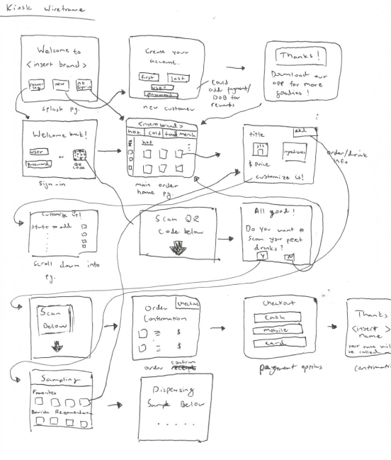
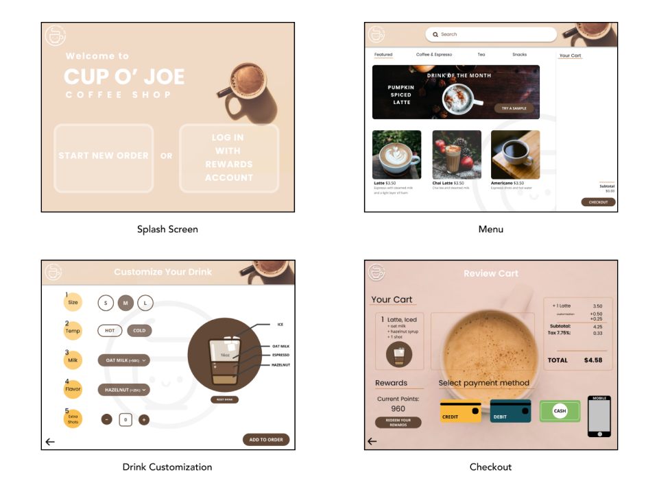
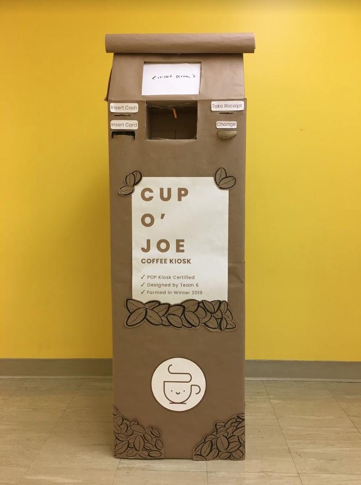
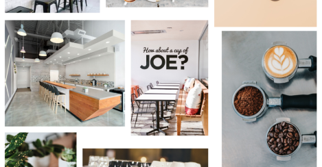
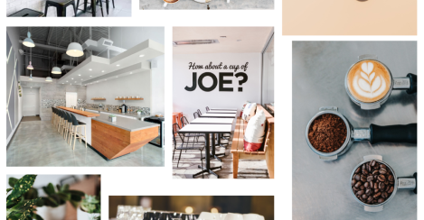

Cup O' Joe
a coffee ordering kiosk.

Overview
Cup O’ Joe was our team’s final project for UCSD’s DSGN 100 course. The project’s end goal to create a physical prototype of a point-of-sale kiosk with an interactable interface––a culmination of all the skills and projects we had developed during the course.
Team: Kenny Cheng, Claire Liang, & Chloe Wu
Project Tags: UX/UI, Product design, Interface design
Duration: 3 Weeks
Objective
The “Cup O’ Joe” coffee kiosk, was our group’s solution to problems that we and users that we interviewed had while ordering coffee. For many individuals, coffee has become a necessity, a staple in their day-to-day lives.
Subsequently, the ordering process is an important experience that customers have to deal with everytime they go to their favorite coffee shop. Their ordering experience could be affected by many variables such as a language barrier (complex coffee jargon), inexperienced customers ordering, or the lack of order-takers and baristas to complete their drinks quickly.
Thus, our kiosk was designed with the goal of creating a new ordering system that allows customers to order quickly and with ease.
Research
In order to develop our kiosk, our group began by interviewing with a dozen random customers about their experiences with ordering coffee in person and through mobile apps.

Some of our interviewee responses.
From these interviews, we identified a number of key insights and actionable data points to inform the subsequent iterations of our kiosk. We condensed these points into two main issues:
1. Habitual coffee drinkers wanted to order as quickly as possible to get on with their day.
2. New customers were intimidated by coffee shop colloquialisms and the pressure of ordering quickly as to not hold up the line.
Based on this research, we established a core problem statement to address in our kiosk design: How might we better serve both novice and regular coffee shop customers to make coffee ordering more efficient and approachable?

With preliminary research completed, our group began wireframing how users would move through our kiosk interface.
(Pictured is my own wireframe)
The wireframes were then consolidated and increased in fidelity to produce a paper prototype, with interactable components, (pictured below) that allowed us to test with users at an early stage.
After conducting a few user tests with our paper prototype, we felt confident enough to begin mocking up a high fidelity version of the interface onto Figma.

For the tests, users were asked to complete the a specific drink order. All the users were able to successfully complete the task, however, they made many mistakes throughout the testing process.
The mistakes made primarily involved the reward points function of our kiosk. Almost all of users had some form of difficulty with this function, with one user even reporting it was “overwhelming”.

From our perspective, before the testing, we had thought the function would work fine and wasn’t going to be an issue to use. Yet, through testing our design, our beliefs were proven wrong by actual data and feedback. This proved to be very useful as the users’ experiences and feedback helped us redesign the function to be more intuitive and simpler to use.
Throughout this process, we gained further insight into users’ past experiences with coffee shops, validated our kiosk concepts, and received invaluable user feedback for our existing interface.
The Cup O’ Joe Kiosk
For the final product, we fully mocked up one sequence for the DSGN 100 presentation.
This sequence in particular had users order an latte with ice, hazelnut flavor, oat-milk, and an extra shots of espresso, checking out with any method with rewards & take samples!

Click through it –– here!
(Only one full order sequence was fully realized due to project requirements and time restrictions).
Conclusion
Our final kiosk (before placing iPad in as the screen)

With a short deadline, our group was tested on our rapid prototyping and design abilities and managed to create a functional kiosk that exemplified our ideas.
Had there been more time, we would have ideally created more scenarios for a fully fleshed out kiosk supplemented by more user-testing and data.
I learned a great deal about research and iterative prototyping over the course of this project, which I couldn’t have done without my great teammates, Professor Taylor Scott, and the IA’s!
 
